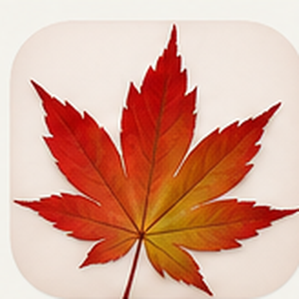

OneDrive-koppeling
Onderzoeken hoe collecties op meerdere apparaten beschikbaar kunnen worden.
Gepland / onderzoek
Beheer je bomen, bewaar gegevens en bekijk per cultivar de kenmerken en foto’s.
Vul het formulier in. Je inzending wordt niet in de app opgeslagen of openbaar getoond. Je e-mailprogramma opent met je bericht klaar om te versturen.
Let op: na het openen van je e-mailprogramma moet je zelf nog op Verzenden drukken.
Onderzoeken hoe je je collectie op meerdere apparaten kunt gebruiken.
Gepland / onderzoekDe indeling en navigatie verbeteren voor grotere schermen.
GeplandWensen verzamelen en prioriteiten bepalen voor volgende versies.
DoorlopendDe planning kan veranderen op basis van haalbaarheid en feedback. Een wens indienen betekent niet automatisch dat deze wordt uitgevoerd.
Standaard: Naam, Soort en Aantal. Je kunt Aankoop en Leeftijd toevoegen.
Later kunnen hier meer uitvoeropties worden toegevoegd.
Maak een gratis account aan of log in. Je persoonlijke collectie en foto's blijven op dit apparaat; gebruik Back-up maken om ze zelf veilig te bewaren.
Ingelogd als
Accounttype: Gratis
Gratis account: maximaal 10 exemplaren. Je collectie, foto’s en wensenlijst blijven lokaal op dit apparaat.
E-mailadres bevestigd.
Account verwijderen verwijdert je online account en profiel. Je lokale collectie, foto’s en wensenlijst worden niet automatisch gewist. Maak zo nodig eerst een back-up en verwijder lokale gegevens afzonderlijk via je browser/app-instellingen.
Zet Acer Atlas als app op je telefoon of computer. Je collectie blijft op dit apparaat staan.
Tik op de knop om te installeren. Als automatisch installeren niet beschikbaar is, zie je hier de stappen.
Kies een stijl. De wijziging wordt meteen toegepast.
Maak een bestand met je collectie, persoonlijke gegevens, lijsten, instellingen en alle eigen foto's. Het bestand wordt rechtstreeks naar je eigen apparaat gedownload; Acer Atlas ontvangt het niet.
Bij Back-up maken opent waar mogelijk het venster Opslaan als. Kies zelf de bestandsnaam en locatie, bijvoorbeeld je gesynchroniseerde OneDrive-map. Op telefoons of browsers zonder Opslaan als wordt het JSON-bestand naar Downloads gedownload. Bij herstellen klik je op ‘Selecteer bestand’ en kies je het eerder opgeslagen AA-datum.json-bestand.
OneDrive: kies op de computer je OneDrive-map in het mapvenster. Een directe OneDrive-accountkoppeling vereist een aparte Microsoft-aanmelding en configuratie. Importeer alleen een back-up die je vertrouwt.
Elke historische bewering krijgt een bron, een datum waarop die is gecontroleerd en een bewijsstatus. Een introductiejaar wordt niet ingevuld als de bron het niet ondersteunt.
Cultivar-classificatie, registratie-informatie en gespecialiseerde kennis over esdoorns.
Open Cultivar Area ↗Botanische profielen en teeltinformatie. Niet voor elke cultivar bevat de RHS historische introductiegegevens.
Open Japanese Maples ↗Indeling op basis van kenmerken; groepsindeling is niet hetzelfde als een historische registratie.
Open classificatie ↗De database bevat 1.015 cultivarrecords. Esveld is de primaire horticulturele bron; alleen records met een individueel gecontroleerde Esveld-productpagina zijn als zodanig gemarkeerd. Overige links openen een zoekresultaat en vormen geen bevestiging van een cultivarprofiel. Een vermelding in de RHS AGM-lijst bevestigt alleen die lijstvermelding, niet de historische introductie of selecteur; overige records moeten individueel worden onderzocht; introductiejaren en selecteurs zijn bewust niet verzonnen. Voor publieke lancering moeten cultivarrecords stuk voor stuk worden gecontroleerd.
Heb je een idee om Acer Atlas te verbeteren? Vul het formulier in. Je e-mailprogramma opent met je bericht klaar; de wens wordt niet in de app opgeslagen.
Onderzoeken hoe collecties op meerdere apparaten beschikbaar kunnen worden.
Gepland / onderzoekDe indeling verbeteren voor grotere schermen.
GeplandVerbeteringen selecteren op basis van feedback uit de community.
DoorlopendStuur foto’s van één of meer Japanse esdoorns naar Acer Atlas. Vanuit een cultivarprofiel wordt de cultivarnaam alvast ingevuld.
De foto’s worden niet door de app opgeslagen of geüpload. Je moet ze handmatig als bijlage toevoegen aan de e-mail.
Acer Atlas is een onafhankelijk hobbyproject. Persoonlijke collectiegegevens worden waar mogelijk lokaal op dit apparaat bewaard. Controleer bij gebruik van account- of synchronisatiefuncties altijd de informatie die bij die functie wordt getoond. Een wens of foto-inzending via e-mail wordt pas verstuurd als je zelf de e-mail verzendt.
Stuur alleen foto’s in die je zelf hebt gemaakt of waarvoor je toestemming hebt om ze te delen. Vermeld de fotograaf als credit gewenst is. Het selecteren van foto’s in het formulier uploadt ze niet automatisch; voeg ze zelf als bijlage toe aan de e-mail.
De vormgeving, teksten, programmacode en samengestelde database van Acer Atlas zijn beschermd voor zover de wet dat toestaat. Kopiëren, herpubliceren of hergebruiken van onderdelen voor een eigen project is niet automatisch toegestaan; vraag vooraf toestemming. Namen van cultivars en feitelijke informatie kunnen eigen rechten of bronvermeldingen hebben. Foto’s blijven onderworpen aan de rechten van de betreffende makers.
Acer Atlas wordt zelfstandig ontwikkeld en verbeterd. De pagina Ontwikkeling toont onderwerpen die onderzocht of gepland zijn en feedback die kan helpen bij toekomstige verbeteringen. Vermelding op de roadmap is geen garantie voor een opleverdatum.
Contact: aceratlas.maple@outlook.com